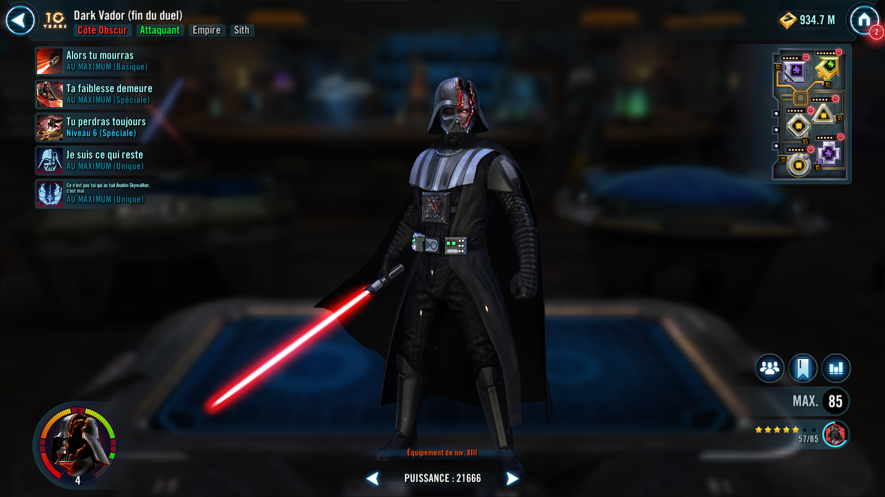
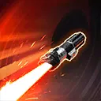
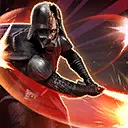
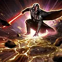
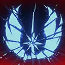

Darth Vader (Duel's End)
A powerful Empire Attacker who is as dedicated to his master as he is to tracking down his enemies
A powerful Empire Attacker who is as dedicated to his master as he is to tracking down his enemies


Deal Physical damage to target enemy and during Darth Vader (Duel's End)'s turn, Ability Block them and inflict Evasion Down for 2 turns. If the targeted enemy is Dazed, Shocked, or Stunned, reduce Vader's cooldowns by 1 and he gains 100% Offense for 1 turn.

Deal Physical damage to target enemy twice and call the strongest other Attacker ally to assist. If the target enemy is Galactic Republic, Inquisitorius, or Jedi, Darth Vader (Duel's End) also assists. This ability will always critically hit if possible.

Dispel buffs on all enemies and deal Physical damage to them, dealing 50% more damage for each debuffed enemy. If the enemy is Shocked or Stunned, they take another instance of damage. Then inflict all enemies with Speed Down for 2 turns, which can't be dispelled, evaded, or prevented, and they lose 100% Accuracy for 1 turn, which can't be evaded.
Enemies are inflicted with Buff Immunity for 2 turns.
This ability can't be resisted.
Omicron Boost : While in Grand Arenas: If Emperor Palpatine is in the ally Leader slot, Fracture target enemy and another random enemy until the start of Darth Vader (Duel's End)'s next turn or until Vader is defeated, which can't be copied, dispelled, or evaded. Vader can't gain bonus Turn Meter this turn.
At the start of battle, Darth Vader (Duel's End) loses 51% Health and is inflicted with Burning until the end of battle, which can't be copied, dispelled, or prevented. Vader can't be defeated by this Burning, is immune to other Burning effects, and takes reduced damage from percent Health effects.
If there are no Galactic Legends at the start of battle, whenever Vader takes Burning damage, all Empire allies gain 20% Offense (stacking, max 300%) until the end of battle and 10% Turn Meter; this effect persists through defeat. If Vader ends his turn with 25% or more Health, all Empire allies gain Potency Up for 1 turn. If Vader ends his turn with 75% or less Health, all Empire allies gain Defense Up for 1 turn.
At the start of battle, if Emperor Palpatine is the ally in the Leader slot, Vader gains Hatred until he is defeated which can't be copied, dispelled or prevented and assists when Emperor Palpatine uses a Special ability during his turn and whenever Emperor Palpatine assists during another ally's turn. If Vader is revived while Emperor Palpatine is the active ally in the Leader slot, Vader regains Hatred at the end of that turn which can't be copied, dispelled or prevented.
Omicron Boost : While in Grand Arenas: At the start of battle, if there are no Galactic Legends and Emperor Palpatine is in the allied Leader slot, all Empire allies gain Hatred until they are defeated which can't be copied, dispelled or prevented. Whenever an Empire Tank ally loses Taunt, they are Marked for 2 turns which can't be copied, dispelled or resisted and recover 30% Max Health and Protection. Vader gains 4 Speed (stacking, max 80) until the end of battle whenever an Empire ally targets a debuffed enemy with an ability, takes damage from an enemy ability while debuffed, or scores a critical hit.

At the start of each encounter, whenever he takes burning damage, or when he uses an ability, Darth Vader (Duel's End) gains 1 stack of Vengeance until the end of battle or until he is defeated. When Vader loses 15 stacks of Vengeance or more, he gains 2 additional bonus turns and the next time he damages an enemy, the targeted enemy is Deathmarked until the end of Vader's bonus turns or Vader is defeated.
Vader can ignore Taunt effects during his turn.
Whenever Vader uses a Special ability, the target enemy is inflicted with a stack of Damage Over Time for 1 turn which can't be evaded. This ability inflicts an additional stack if the target enemy is Galactic Republic, Inquisitorius, or Jedi, and another additional stack if it is an Anakin Skywalker. At the start of battle, if there is an enemy Anakin Skywalker, they are inflicted with Demoralized for the rest of battle which can't be copied, dispelled, evaded, prevented, or resisted and if they are in the enemy Leader slot, all Empire allies are immune to Daze for the rest of battle and Vader can't be targeted while there is another Empire ally.
If all allies are Empire at the start of battle, Vader gains 50% Critical Damage, is immune to Fear and Turn Meter reduction.